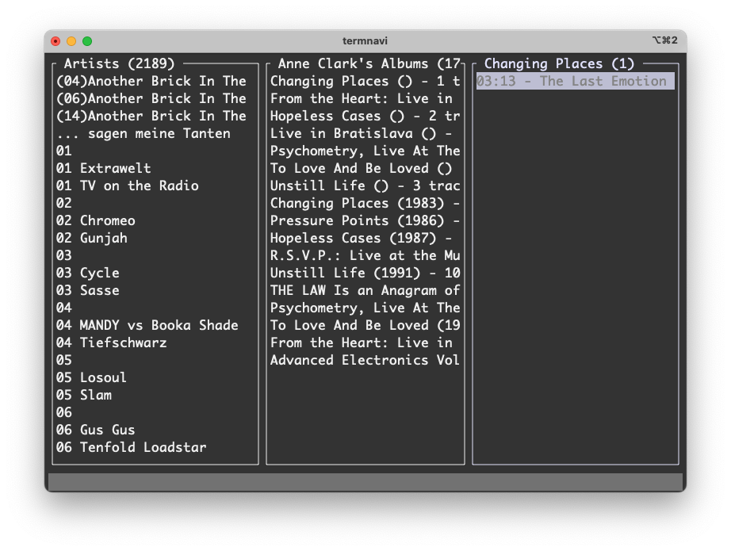

TerminalDrome 0.2.0 is available
I am proud to announce the release of TerminalDrome 0.2.0 as a feature-rich stable version to the public. It is still alpha but it works on a daily basis here on my Powermac G5 or the Mac Mini M4.
 TerminalDrome Splash Screen
TerminalDrome Splash Screen
There are compiled binaries available for arm64, ppc64 and armhf. But TerminalDrome will build on every Linux with Rust and Cargo.
Status
- Absolute pre-alpha!!!
- Scrobbling to last.fm and listen.brainz works via Navidrome
- Track updates while playing. Once a song finishes, it automatically switches to the next one and updates the display accordingly.
- A basic full-text search is implemented: press the slash
/key to open the search window, enter a term, and the results will appear in the third pane. - Basic Help Screen via Shift+H Button.
- Splash Start Screen :-)
- Nice Status Bar at the bottom
 TerminalDrome is playing a song on my Powermac G5
TerminalDrome is playing a song on my Powermac G5
✨ Key Features of TerminalDrome
Navidrome Integration
- Connects to your Navidrome server (HTTPS enforced)
- Supports all Subsonic API endpoints (Artists, Albums, Songs)
TUI (Terminal UI) with 3-column layout
- Artists → Albums → Songs
- Intuitive navigation using arrow keys
- Colored highlights (active songs, selection, status)
Music Playback
- MPV integration (runs silently in the background)
- Automatic transition to the next song (playlist mode)
- Play/pause with spacebar
- Progress bar and time display
Last.fm Scrobbling
- Automatically scrobbles at ~50% of the song duration
- Correct timestamps (Unix milliseconds)
- Avoids duplicates (via
current_scrobble_sentflag)
Persistence
- Saves last state (
state.json)
- Current artist/album/song
- Scroll positions
- Now-playing index
- Stable MPV communication
- Unix socket for real-time updates (playlist position, time)
- Correct handling of playlist end
- Minimal status bar
- Displays current song + album/artist
- Clear error messages (e.g. for connection problems)
- Saves last state (
 TerminalDrome Help Screen
TerminalDrome Help Screen
🔧 Technical Highlights
- Written in Rust (fast & safe)
- Async/await for non-blocking I/O
- Atomic operations for thread-safe state (MPV ↔ UI)
- TOML configuration (server URL, credentials)
🚀 Roadmap Ideas (optional)
- Search filtering in lists
- Shuffle/repeat modes
- Cover art (via Sixel or ASCII art)
- Theme support (color schemes)
Ressources
Tags: ppc64, navidrome, rust, terminal, powermacg5, linux, termnavi, terminaldrome
New Release of TerminalDrome on Github
Since I recently discovered how relaxing programming can be, I've been tinkering with my Navidrome-compatible terminal client called TerminalDrome almost every day.
I've now integrated a new feature, which I've moved to Main:
A simple search function:
- Press slash / and the search will open.
- Enter the search term, press Enter, and you'll see the search results in the right panel.
- It's neither alphabetically sorted nor otherwise organized.
- Additionally, there's a feature in the leftmost panel where you can jump directly to the beginning of the respective artist by pressing a letter of your choice. So if I press D, I'll land on D.A.F., or Q on Queens Of The Stone Age—you get it?
 My TerminalDrome CLient in Search Mode
My TerminalDrome CLient in Search Mode
I'm very proud.
TerminalDrome is written in Rust and can be downloaded and compiled using the following command. You'll need the Rust toolchain and mpv.
git clone https://github.com/thafaker/termnavi.git TerminalDrome
cd TerminalDrome
cargo build && cargo run
I've also explained this on my Github repo.
 TerminalDrome (left) near btop (right) on my Debian 13 Sid PowerPC Powermac G5
TerminalDrome (left) near btop (right) on my Debian 13 Sid PowerPC Powermac G5
Tags: ppc64, navidrome, rust, terminal, powermacg5, linux, termnavi, terminaldrome
TerminalDrome is evolving
My little Terminal Navidrome Project TerminalDrome is evolving and works a little bit better from day to day. So, what is working?

- safes the state of the panes to come back later
- in pane 4 it shows the elapsed time and a small bar is going to 100%
- it plays the songs of an album from 1 to last
What does not work:
- it won't changes the now playing bar when a new song is playing
This is a screenshot of my real Powermac G5 running TerminalDrome in the wild.

Ressources
Tags: ppc64, navidrome, rust, terminal, powermacg5, linux, termnavi, terminaldrome
TermNavi is renamed in TerminalDrome
Because there's already a Terminal Navidrome client called NaviTerm, and I don't really like my name TermNavi, I decided to rename my software TerminalDrome. Of course, that sounds completely stupid, but at least it's better than a copy.
I think my software will soon become famous.

Oh, and it doesn't even work properly yet. :-)
Ressources
Tags: ppc64, navidrome, rust, terminal, powermacg5, linux, termnavi, terminaldrome
TermNavi Terminal Navidrome Client ppc64
So the other day I tried to connect to my Navidrome MP3 Streaming Server, I call it "Spotify at Home", via Webinterface to listen to some music, but there were no way to do this. The Webbrowsers available are too old. Sad.
So I decided to programm a really small Navidrome Terminal Client called TermNavi (yes I know... need better name) to listen to my MP3. And what shall I say? The first implementation is ready. I tested and successfully compiled on aarch64 (my MacMini M4) and the legendary Powermac G5 with ARCH Linux or Debian Sid ppc64.

So this it is:
- MVP for playback
- Rust for pgramming
- Ratatui für the Terminal UI (TUI)
- a Powermac G5 with PPC Linux
Really happy, it is my first rust project.
known bugs
- State handling is missing
- UI Rendering for more selections
- scroll logic is worst
And as a now cool hacker guy, I pushed everything in my github repo. But don't expect too much, I am a worst programmer, I often do not understand what is going on and I have everything in one file, the main.rs :-)
Ressources
Tags: ppc64, navidrome, rust, terminal, powermacg5, linux, terminaldrome
Claws-Mail 4.3.1 ArchPOWER Linux successfully compiled for PPC64
Due to the lack of a good graphical email client [^1] for my Arch POWER Linux Distro (Arch Linux for PowerPC), I tried several things and ended up with claws-mail. But it is not installable or not existing in the repos of pacman for powerpc. So I dcided to compile it by myself.
Claws-Mail 4.3.1 just compiled successfully on my Powermac G5.
 claws-mail first window, first start
claws-mail first window, first start
Claws Mail is an email client (and news reader), based on GTK+, featuring:
- Quick response
- Graceful, and sophisticated interface
- Easy configuration, intuitive operation
- Abundant features
- Extensibility
- Robustness and stability
 todays screenshot of my inbox on claws-mail on my powermac g5
todays screenshot of my inbox on claws-mail on my powermac g5
Okay, it is an really not beautiful email client, but it works great and we should not forget my ancient hardware from 2005 :-)
[^1]: I think there is no one. Not only one.
Ressources
Tags: archlinux, powermacg5, email, ppc, ppc64
Hello ArchPOWER Linux for PPC64
In a nice comment from Matias, he told me he is using ArchPOWER Linux, an unofficial Build of Arch Linux for PowerPC, PPC64, PPC and PPCle for the Power8 Architecture etc. pp.; If I remember correctly, I stumbled across this Linux Distro while I researched for the best Linux for my Powermac G5, but maybe because I was at the beginning of my Linux journey on these machines, I found it to heavy or something else told me not to try. I don't know but it is not important anymore, because I installed ArchPOWER Linux current on my NVMe-SSD in the Powermac, multi-booting with T2 Linux, Debian 12 SID, Adelie Linux and Fienix Linux. :-)

Hello T2/Linux 25.04 - I switched back to 12.24
Man, I am a little bit frustrated right now. Everytime a new release of
T2/Linux
is going online, I am really happy to try it out on my Powermac G5. I download
it and dd it to a USB Stick (here
I explain how to boot a PPC Mac from USB) and than boot the Powermac via OpenFirmware
from that USB Stick and everything works like charme. Like I exspect it.
The Install Process is straight forward and easy, thanks to STONE, the Installer
of T2. But with Version 25.04 there is a problem, the FANs turn to MAX rotation like
there is a kernel module not loaded or something like that and you think the G5
will soon fly away. The next thing: X seems to be broken, I can't startx
anymore.
In 24.12 these things were okay, X works and even 3D-Acceleration works so I could use it in a quite usual way. But now - all of this is gone. Everytime I try, there is another problem. Something other broken. And I am not smart enough to fix it. I do not understand enough and there is not enough documentation to get this done. Sure, René is a One-Man-Show with his T2 Linux Project and he is fixing a lot of older drivers and software packages and he earns nothing and I say thank you man. Great Job. But even in his documentation, I am unable to find the right solution e.g. to crosscompile not the whole target, just a package and all of it's depencies.
I never got Palemoon or ArcticFox compiled or crosscompiled, because there are errors I canot solve. I installed T2/ARM64 on my Mac Mini M4 because this small machine is really powerful so it is a great crosscompoling solution for the me at home for my PPC64 Powermac. But it starts while compiling gcc. I am unable to compile GCC. And without GCC there is no way to compile anything further.